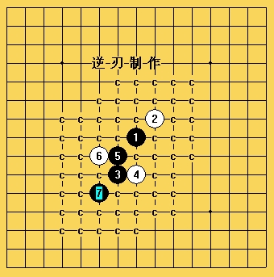

《水月》一问题，请高手帮忙
#1 《水月》一问题，请高手帮忙 作者：疏星终结 发表时间：2008-8-7 12:28:23
这个形似云2打的水，无法像云那样杀，高手看看能杀么?
=======上图对应的爱五子棋谱代码如下，以便你拆解：========
h8i9g6h6g7f7
======================================================
#2 Re:《水月》一问题，请高手帮忙 作者：疏星终结 发表时间：2008-8-8 15:46:58
错了，不是水月，是名月，刚看完水月的对局，。。。。请高手帮忙#3 Re:《水月》一问题，请高手帮忙 作者：屏蔽 发表时间：2008-8-8 16:18:17
7-F5，和云月必胜纵横各差一格，你看看有没有什么难点？
8-G5，9-E4，10-D3，11-F4。
#4 Re:《水月》一问题，请高手帮忙 作者：逆刃 发表时间：2008-8-8 16:43:10
刚刚才看到，帮你做了个地毯，应该没有什么问题。

 名月一局面.rar
名月一局面.rar
#5 Re:《水月》一问题，请高手帮忙 作者：江南新绿 发表时间：2008-8-8 16:56:26
云月的通型，看起来没有问题
#6 Re:《水月》一问题，请高手帮忙 作者：疏星终结 发表时间：2008-8-8 20:17:54
 ,弄了几天也没弄好，这一会儿就搞出来了
,弄了几天也没弄好，这一会儿就搞出来了
#7 Re:《水月》一问题，请高手帮忙 作者：gerbo 发表时间：2008-8-9 3:06:05
逆刃的研究能力越来越强了~！！
#8 Re:《水月》一问题，请高手帮忙 作者：心情五子 发表时间：2008-8-27 10:52:40
能详细点的弄几个参考图吗，我这样的新手才能看的懂哦！